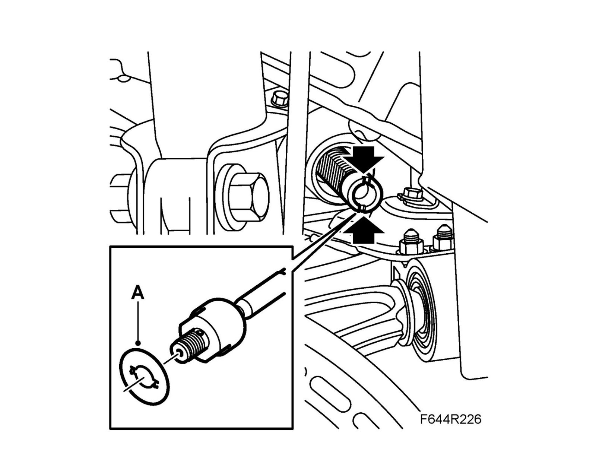
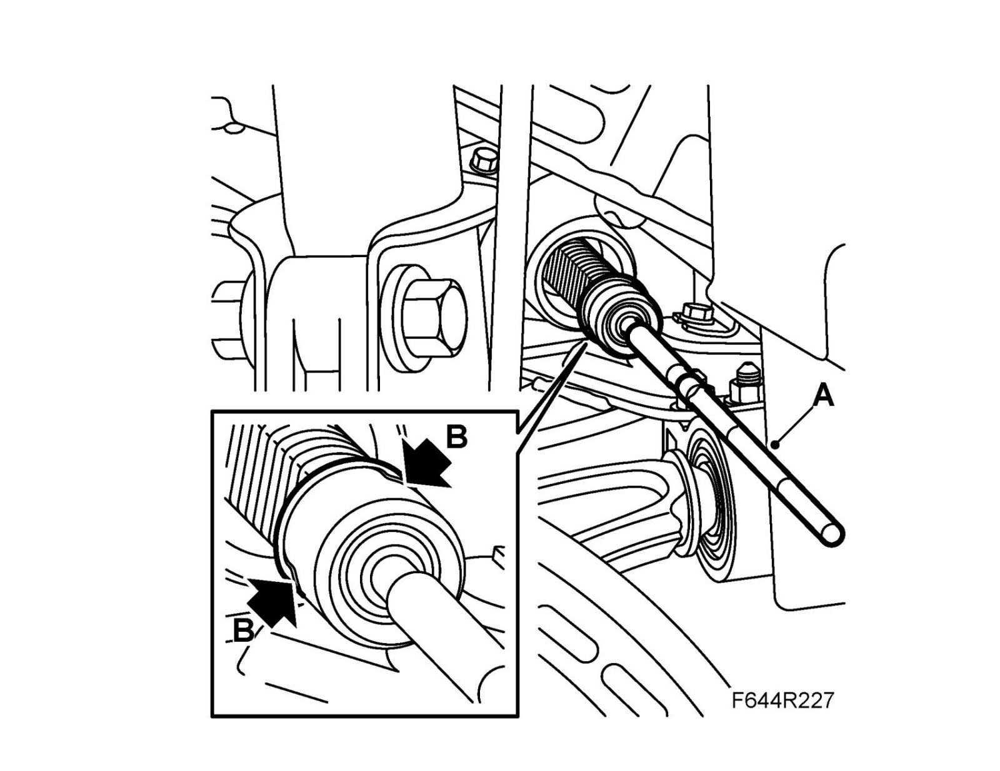

Inner Track Rod
Inner track rod, B207To remove
1. Remove the front wheel.
2. Remove outer track rod and steering gear membrane.
3. Bend up the lock tabs (A) and remove the track rod (B) using tool KKM-6247 Special wrench or a 32 mm crow's foot wrench.
To fit
Important
Remove any adhesive residue from the steering gear and dust excluder.
1. Fit the locking washer (A).

2. Fit and fasten the track rod (A). Bend in the lock tab (B) toward the inner ball joint.
Tightening torque 90 Nm (66 lbf ft)

3. Fit steering gear membrane and outer track rod.
4. Fit the wheel.
5. Check Wheel angles and adjust if necessary, see Wheel alignment.